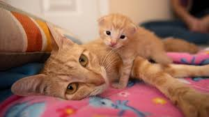
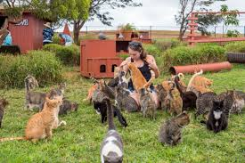

My Beloved Friend, Sandra
Sandra, my German Shepherd, has been my best friend and loyal companion for over six years. She is a playful and energetic dog who loves to run and chase balls. I adopted her when she was just a puppy, and since then, we have formed an unbreakable bond. Sandra has helped me through some tough times, and she always knows how to cheer me up. She brings so much joy and happiness into my life, and I cannot imagine life without her.
My Cat Jason
Jason is my 5-year-old orange tabby cat. He has been a part of my life since he was a kitten. He is a cuddly cat who loves to sleep on my lap while I work. He has a playful personality and loves chasing toys around the house. Jason is always there for me, and his purring is like music to my ears. He has brought so much love and happiness into my life, and I am grateful to have him as my furry companion.
Great Boarding Experience
When I went on vacation last month, I boarded my cat at My Animal Farm and couldn't have been happier with the experience. The facility was clean and well-maintained, and the staff was attentive to my cat's needs. I appreciated the daily updates and photos they sent me while I was away, which gave me peace of mind knowing that my pet was in good hands.
A Trusted Resource for Pet Care
I have been taking my pets to My Animal Farm for years for all of their healthcare needs. The veterinarians are top-notch and always provide excellent care. The staff is friendly and knowledgeable, and I appreciate their willingness to answer all of my questions and concerns. I trust My Animal Farm to provide the best possible care for my furry family members.
Great Experience with My Animal Farm
I recently adopted a dog from My Animal Farm and it was one of the best decisions I've ever made. The staff was incredibly knowledgeable and helpful in finding the perfect furry friend for me. The adoption process was smooth and easy, and I felt confident in the care my new pet had received prior to coming home with me. I would highly recommend My Animal Farm to anyone looking to adopt a pet.